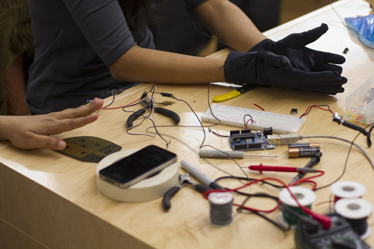
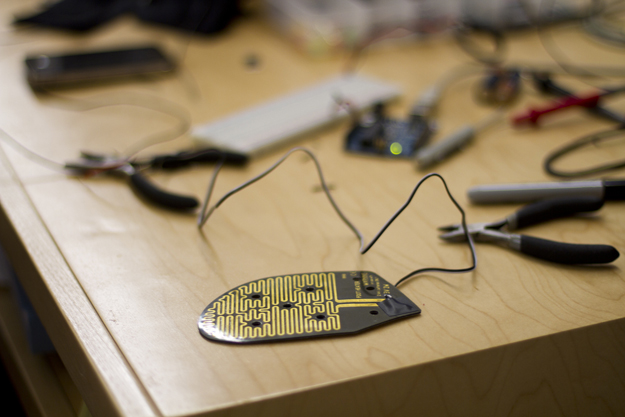
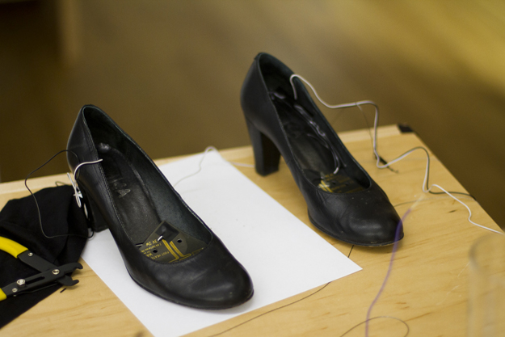
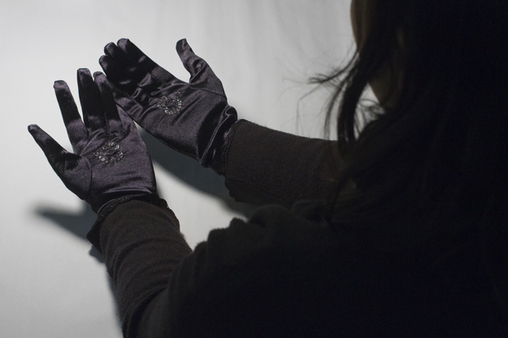

MFA IXD
Chaff-eau
Gloves that leverage the gesture of hand-rubbing as a mechanism to heat cold feet.
Chaffe-eau was the result of an exploration into ways of helping people warm their extremities without requiring the use of thermal underwear or snow boots. We wanted a solution that would be discreet and elegant enough to work for cocktail parties and evening soirées.
This video tells the story of our concept in more detail, featuring cameo’s from the other 3 SVA IxD Physical Computing midterm projects.
This was a 4-week collaboration with Sana Rao, Prachi Pundeer and Barbara deWilde as part of Rob Faludi‘s Physical Computing class.